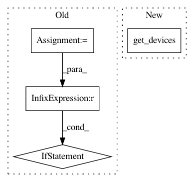

ce9de1b7d235f218fe21549609121af38bcb40c6,homeassistant/external/wink/pywink.py,,get_bulbs,#,269
Before Change
switches = []
for item in items:
id = item.get("light_bulb_id")
if id is not None:
switches.append(wink_bulb(item))
return switches
def get_switches():
After Change
return devices
def get_bulbs():
return get_devices("light_bulb_id", wink_bulb)
def get_switches():
return get_devices("binary_switch_id", wink_binary_switch)
In pattern: SUPERPATTERN
Frequency: 3
Non-data size: 4
Instances
Project Name: home-assistant/home-assistant
Commit Name: ce9de1b7d235f218fe21549609121af38bcb40c6
Time: 2015-01-19
Author: grompf@gmail.com
File Name: homeassistant/external/wink/pywink.py
Class Name:
Method Name: get_bulbs
Project Name: OpenNMT/OpenNMT-tf
Commit Name: c6edefdca203a4b58418684295203c3b521cd5bc
Time: 2019-11-06
Author: guillaumekln@users.noreply.github.com
File Name: opennmt/runner.py
Class Name: Runner
Method Name: train
Project Name: home-assistant/home-assistant
Commit Name: ce9de1b7d235f218fe21549609121af38bcb40c6
Time: 2015-01-19
Author: grompf@gmail.com
File Name: homeassistant/external/wink/pywink.py
Class Name:
Method Name: get_switches